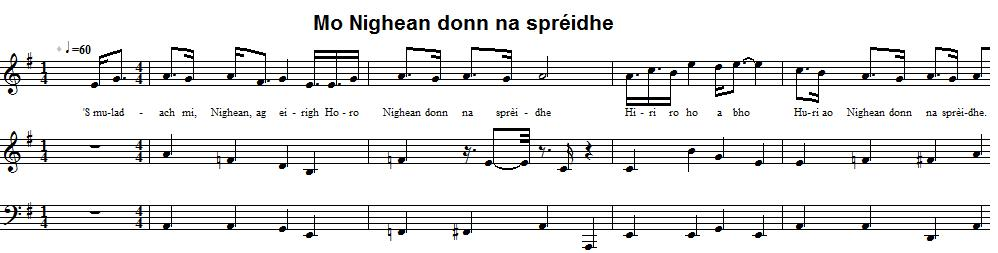

Mo Nighean Donn na Sprèidhe
My brown-haired lass of the cattle - Ma brune bergère
Unknown author - Anonyme
Tune
Mo Nighean Donn na Sprèidhe

|
To the tune
As sung by Nan McKinnon and recorded by James Ross on 24.07.1956. Track 19292 kept in the collection of the "School of Scottish Studies". (Permanent Link: //www.tobarandualchais.co.uk/fullrecord/19292/1). To the text Nan McKinnon (Nan Eachainn Fhionnlaigh, 1903-1982, who was born and lived at Vatersay, Island of Barra), the contributor to the School of Scottish Studies record, sings six [or nine?] verses of this song which she considers "another song for "the Prince" [Prince Charles Edward Stuart]. No written transcription of her singing is given at the "Am Faclair Beag" site which is the source for the present page, but it seems that the words "Teàrlach" (Charles) or "Stiùbhart" (Stuart) are not included in the song. The same singer ascribed the song Òran Fir Hèisgeir to a Jacobite heroine, Lady Grange. |
A propos de la mélodie
Chantée par Nan McKinnon et enregistrée par James Ross le 24.07.1956. Enregistrement N° 19292 de la collection de la "School of Scottish Studies". (Lien permanent: //www.tobarandualchais.co.uk/fullrecord/19292/1). A propos du texte Nan McKinnon (Nan Eachainn Fhionnlaigh, 1903-1982, qui naquit et vécut à Vatersay, Île de Barra), à qui l'on doit ce document de la "School of Scottish Studies", interprète six [ou neuf] couplets de ce chant qu'elle estime être "un autre chant pour "le Prince" [Charles Edouard Stuart]. Aucune transcription écrite de chant n'est fournie par le site "Am Faclair Beag" qui est la source unique de la présente page, mais il semble bien que les mots "Teàrlach" (Charles) ou "Stiùbhart" (Stuart) ne soient pas prononcés au cours du chant. Cette dame attribuait déjà le chant Òran Fir Hèisgeir à une héroïne Jacobite, Lady Grange. |

|
MY BROWN-HAIRED LASS OF THE CATTLE [1]
1. 1. I feel sad, lass, upon arising Horo brown-haired lass of the catle Hiri ro ho a bho Huri ao brown-haired lass of the cattle. The rest of the song is summed up as follows: She is sad this day upon arising, hearing that he has been defeated. She in Scotland and he in Ireland. Plentiful are the clans who would rise for him. |
MO NIGHEAN DONN NA SPREIDHE
1. 'S muladach mi, Nighean, ag eirigh Horo Nighean donn na sprèidhe Hiri ro ho a bho Huri ao Nighean donn na sprèidhe. Geàrr-chunntas: Tha i muladach ag èirigh, air cluinntinn gun do rinn iad an eucoir. Ise an Alba 's esan an Èirinn. 'S lìonmhor gach fine dh'èireadh leis. |
MA BRUNE BERGERE [1]
1. 1. Je me sens triste, la belle, à mon lever Horo la brune bergère Hiri ro ho a bho Huri ao la brune bergère. Le reste de la chanson est résumé comme suit: Elle est triste en se levant, à la nouvelle de sa défaite. Elle est en Ecosse et lui en Irlande. Nombreux sont les clans qui se soulèveraient pour le soutenir. |
| [1] There are several other songs with similar titles: "Ruidhleadh mo Nighean Donn" (Reel of my brown-haired lass), "A bhanarach dhonn a’ chruidh" ("O brown-haired milkmaid of the cattle", by Alexander McDonald), etc. that have no Jacobite import, whatsoever. | [1] Il existe plusieurs chants portant des titres similaires: "Ruidhleadh mo Nighean Donn" (Reel de la jeune fille brune), "A bhanarach dhonn a’ chruidh" ("O la brune fermière", d'Alexandre McDonald), etc. qui n'ont aucun rapport avec le Jacobitisme. |